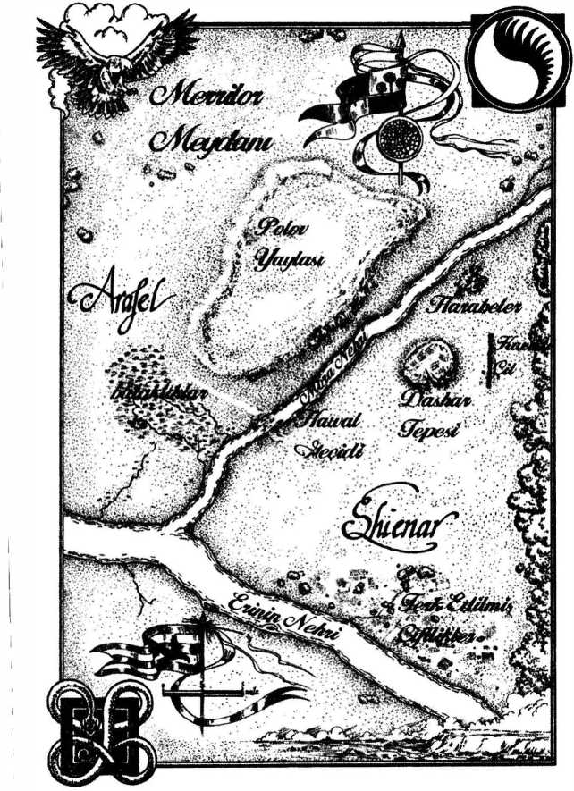

34
-----------------------------------------------------------------
SÜZÜLÜRKEN
Rand var olmayan bir yerde duruyordu.
Zamanın dışında, Desen’in dışında bir yerde.
Çevresinde engin bir hiçlik uzanıyordu. Yutmaya hazır, aç ve obur bir boşluk. Desen’i görebiliyordu. Kıvır kıvır, binlerce ışık kurdelesine benziyordu. Çevresinde, başının üzerinde dönüyor, dalgalanıyor, ışıl ışıl birbirlerine geçiyorlardı. En azından, zihni gördüklerini bu şekilde yorumluyordu.
Var olmuş, olabilecek her şey; her şey farklı olsaydı olabilecek her şey... hepsi önünde uzanıyordu.
Rand kavrayamıyordu. Çevresindeki karanlık onu çekiştiriyor, kendine doğru çekiyordu. Desen’e uzandı ve kaybolup gitmemek için bir şekilde kendini ona bağladı.
Bu odak noktasını değiştirdi. Onu bir zamana hafifçe bağladı. Önündeki desen dalgalandı ve Rand onun dokunmasını izledi. Asıl Desen değildi, biliyordu, ama zihni bu şekilde görüyordu. Aşinaydı, ona tarif edildiği gibi, bir araya dokunan yaşam ipliklerinden oluşuyordu.
Rand kendini yine gerçekliğe sabitledi ve içinde hareket etti. Zaman yine anlam kazandı ve Rand ilerisini ve gerisini göremez oldu. Hala, dönen bir kürenin üzerinde duran bir adam gibi, her yeri görebiliyordu.
Rand boşluğa döndü. “Demek,” dedi ona, “aslında burada olacak. Moridin beni basit bir kılıç dövüşünün her şeye karar vereceğine inandırmaya çalıştı.”
O BENDEN. AMA GÖZLERİ KÜÇÜK.
“Evet,” dedi Rand. “Ben de fark ettim.”
KÜÇÜK ALETLER ETKİLİ OLABİLİR. İNCECİK BİR BIÇAK KALBİ DURDURABİLİR. SENİ BURAYA O GETİRDİ DÜŞMAN.
Geçen sefer, Rand Lews Therin ismini taşırken, bunların hiçbiri olmamıştı. Bunu ancak iyi bir işaret olarak yorumlayabilirdi.
Şimdi savaş gerçekten başlamıştı. Hiçliğe baktı ve onun kabardığını hissetti. Sonra, ani bir fırtına gibi, Karanlık Varlık tüm gücüyle Rand’a yüklendi.
Perrin acıyla inleyerek ağaca yaslandı. Katil’in oku omzunu delmişti ve ok başı arkasından çıkmıştı. Çekip çıkarmaya cüret edemezdi...
Sallandı. Düşünce bitkin bir biçimde geldi. Neredeydi? Katil’den gidebildiğince uzağa sekmişti, ama... bu mekanı tanımıyordu. Ağaçların tepeleri bir tuhaftı, fazla yapraklı, daha önce görmediği bir türden. Burada da fırtına vardı, ama daha zayıftı.
Perrin kaydı ve bir homurtuyla yere düştü. Omzu acıyla kavruldu. Sırtüstü döndü ve gökyüzüne baktı. Düşerken ok kırılmıştı.
Bu... bu kurt düşü. Oku yok edebilirim.
Bunu yapmak için gücünü toplamaya çalıştı, ama çok zayıftı. Kendini süzülürken buldu ve çevresinde kurt aradı. Birkaç kurdun zihnini buldu ve kurtlar şaşırdı.
Konuşabilen iki bacaklı? Bu da nedir? Sen nesin?
Perrin’in doğası onları korkutmuştu ve onu zihinlerinden çıkarmaya çalışıyorlardı. Perrin’in ne olduğunu nasıl bilmezlerdi? Kurtların hafızaları çok, çok eskiye dayanırdı. Kuşkusuz... kuşkusuz...
Faile, diye düşündü. Öylesine güzel, öylesine akıllı. Ona gitmeliyim. Benim... benim bu Yolkapısı’nı kapatmam lazım... sonra ona, İki Nehir’e gidebilirim...
Perrin döndü ve elleri ve dizleri üzerinde doğruldu. Yerdeki kan mıydı? Ne kadar da kırmızı. Gözlerini kırpıştırarak baktı.
“Demek buradasın,” dedi bir ses.
Lanfear. Perrin, görüş alanı bulanarak ona baktı.
“Demek o seni yendi,” dedi Lanfear, kollarını kavuşturarak. “Hayal kırıklığına uğradım. Onu seçmek zorunda kalmak istemezdim. Seni çok daha çekici buluyorum kurt.”
“Lütfen,” diye hırıldadı Perrin.
“İçimden sana yardım etmek geliyor, ama gelmemeli,” dedi Lanfear. “Zayıf olduğunu kanıtladın.”
“Ben... ben onu yenebilirim.” Aniden Lanfear’ın önünde başarısız olmanın utancı Perrin’i yıkıp geçti. Lanfear’ın onun hakkında ne düşündüğü hakkında endişelenmeye ne zaman başlamıştı? Tam olarak kestiremiyordu.
Lanfear bir parmağını kolunda tıkırdattı.
“Lütfen...” dedi Perrin, elini kaldırarak. “Lütfen.”
“Hayır,” dedi Lanfear, arkasına dönerek. “Kalbimi, bunu hak etmeyen birine verme hatasından dersimi aldım. Hoşçakal kurt eniği.”
Kayboldu ve Perrin’i bu tuhaf yerde, elleri ve dizleri üzerinde bıraktı.
Faile, dedi Perrin’in zihninin bir parçası. Lanfear hakkında endişelenme. Faile’e gitmen lazım.
Evet... Evet, ona gidebilirdi, değil mi? O neredeydi? Merrilor Meydanı. Onu orada bırakmıştı. Faile orada olmalıydı. Perrin, bir şekilde yeterince güç toplayarak oraya sekti. Ama Faile orada değildi elbette. Perrin kurt düşündeydi.
Rand’ın göndereceği kapı. Burada açılacaktı. Ona ulaşması gerekiyordu. Onun... onun...
Yere yığıldı ve sırtüstü yuvarlandı. Hiçliğe kaydığını hissetti. Çalkalanan gökyüzüne bakarken gözleri karardı. En azından... en azından Rand için oradaydım, diye düşündü Perrin.
Kurtlar artık bu yanda Shayol Ghul’ü tutabilirdi, değil mi? Rand’ı güvende tutabilirlerdi... Tutmak zorundalardı.
Faile zayıf ateşi bir sopayla dürtükledi. Karanlık çökmüştü ve ateş soluk kırmızı bir ışıkla parlıyordu. Daha büyük bir ateş yakmaya cesaret edememişlerdi. Afet’te ölümcül şeyler geziniyordu. Trolloclar buradaki en önemsiz tehlikelerdendi.
Burada hava ekşi kokuyordu ve Faile her kara benekli çalının ardında çürümeye yüz tutmuş bir ceset bulmayı bekliyordu. Adımı attığında yer çatlıyordu, yüzyıllardır yağmur görmemiş gibi, kuru toprak botlarının altında parçalanıyordu. Kampta otururken, uzakta, bir ağaç kümesinin üzerinde, bir grup hastalıklı yeşil ışık geçtiğini gördü -parlayan bir böcek sürüsü gibi. Afet’i yeterince tanıdığından, onlar geçene kadar nefesini tuttu. Ne olduklarını bilmiyordu ve öğrenmek de istemiyordu.
Kamp yaptıkları bu yeri bulmak için grubu biraz yürütmüştü. Yolda, kervan işçilerinden birini bir dal parçası, bir başkasını da çamura benzeyen, ama adamın bacağını eriten bir şeye basmak öldürmüştü. Çamur adamın yüzüne de sıçramıştı. Çırpınarak, çığlıklar atarak ölmüştü.
Ses başka dehşetler getirmesin diye adamın ağzını tıkamaları gerekmişti.
Afet. Burada hayatta kalamazlardı. Basit bir yürüyüş iki kişiyi öldürmüştü ve Faile’in koruması gereken yüz kadar insan vardı. Birlik’ten korumalar, Cha Faile’in bazı üyeleri, araba sürücüleri ve erzak kervanının işçileri. Arabaların sekizi hala çalışıyordu ve şimdilik onları bu kampa getirmişlerdi. Çok dikkat çektiklerinden, muhtemelen daha ileri götürmezlerdi.
Faile bu geceden sağ çıkacaklarından bile emin değildi. Işık! Tek kurtuluş şansları Aes Sedailerdi. Olanları fark edip yardım gönderirler miydi? Çok küçük bir umuttu, ama Faile Tek Güç’ten anlamazdı.
“Tamam,” dedi Faile usulca, yanında oturanlara -Mandevwin, Aravine, Harnan, Setalle ve Cha Faile’den Arrela. “Konuşalım.”
Diğerleri boş boş baktılar. Muhtemelen, Faile gibi, çocukluklarından beri dinledikleri Afet hikayeleri yüzünden korkuyorlardı. Buraya geldikten kısa süre sonra gruplarından iki kişinin ölmesi de korkularını güçlendirmişti. Buranın ne kadar tehlikeli olduğunu biliyorlardı. Gecenin içindeki her seste yerlerinden sıçrıyorlardı.
“Durumu açıklamaya çalışacağım,” dedi Faile, çevrelerini saran ölümü diğerlerine unutturmaya çalışarak. “Şer kabarcığı sırasında, o kristal kazıklardan biri, tam kapıyolu açarken Berisha’nın ayağına saplandı.”
“Yara mı?” diye sordu Mandevwin ateşin yanındaki yerinden. “Bu kapıyolun hatalı olmasına sebep olur mu? Gerçekten, Aes Sedai işleri hakkında pek bir şey bilmem, bilmek de istemem. Birinin dikkati dağılmışsa, kazayla yanlış yere kapıyol açabilir mi?”
Setalle kaşlarını çattı ve ifadesi Faile’in dikkatini çekti. Setalle ne asil ne de bir subaydı. Ama kadında bir şey vardı... yetke ve bilgelik yansıtan bir şey.
“Bildiğin bir şey mi var?” diye sordu Faile ona.
Setalle boğazını temizledi. “Ben... yönlendirme hakkında bir şeyler biliyorum. Eskiden ilgimi çeken bir konuydu. Bazen, bir örgü yanlış yapıldığında, hiçbir şey yapmaz. Başka zamanlarda sonuç felaket olur. Böyle, çalışan ama yanlış çalışan örgü duymadım hiç.”
“Eh,” dedi Harnan, karanlığı izleyerek ve gözle görülür bir biçimde ürpererek, “tek diğer seçenek kadının bizi Afet’e göndermeyi istediği.”
“Belki da kafası karışmıştı,” dedi Faile. “O anın baskısı, bizi yanlış yere göndermesine sebep oldu. Ben de gergin bir anımda kafamın karıştığını ve kendimi yanlış yöne doğru koşarken bulduğumu hatırlarım. Böyle olmuş olabilir.”
Diğerleri başlarını salladılar, ama Setalle hala endişeli görünüyordu.
“Ne var?” diye ısrar etti Faile.
“Aes Sedai eğitimi böyle durumlar konusunda çok sıkıdır,” dedi Setalle. “Hiçbir kadın büyük baskı altındayken yönlendirmeyi öğrenmeden Aes Sedailik düzeyine yükselmez. Yüzüğü takmadan önce bir kadının aşması gereken bazı... engeller vardır.”
Demek öyle, diye düşündü Faile, Setalle’nin Aes Sedai bir akrabası olmalı. Bu kadar özel bilgiler paylaştığına göre yakın bir akraba. Belki bir kız kardeş?
“O zaman bunun bir tür tuzak olduğunu mu varsaymalıyız?” Aravine’in kafası karışmış gibiydi. “Berisha’nın bir tür Karanlıkdostu olduğunu? Kuşkusuz Gölge’nin bir erzak kervanını yolundan çevirmekten daha büyük işleri olmalı.”
Faile hiçbir şey söylemedi. Boru güvendeydi. Sandık şu anda yakındaki küçük çadırda duruyordu. Arabaları halka halinde dizmişlerdi ve yalnızca bir ateş yakmışlardı. Kervanın geri kalanı uyuyor ya da uyumaya çalışıyordu.
Durgun, aşırı sessiz hava Faile’in bin göz tarafından izleniyormuş gibi hissetmesine sebep oluyordu. Gölge kervanı için bir tuzak planlamışsa, bunun anlamı Gölge’nin Boru’dan haberdar olduğuydu. Bu durumda, ciddi tehlike içindeydiler. Afet’te olmaktan daha da ciddi bir tehlike.
“Hayır,” dedi Setalle. “Hayır, Aravine haklı. Bu kötü niyetli bir tuzak olamaz. Şer kabarcığı gelmeseydi, nereye gittiğine bakmadan kapıyoldan geçmezdik. Bildiğimiz kadarıyla bu kabarcıklar tamamen gelişigüzel.”
Berisha yalnızca koşullardan faydalanmaya çalışmamışsa, diye düşündü Faile. Bir de kadının ölümü vardı. Karnındaki yara, kazıklardan biri tarafından açılmış gibi görünmüyordu. Bıçak yarasına benziyordu. Boru kapıyoldan geçtikten sonra biri Berisha’ya saldırmış gibi. Onun olanları anlatmaması için olabilir miydi?
Işık, diye düşündü Faile. Gittikçe daha şüpheci biri oluyorum.
“Ee,” dedi Harnan, “ne yapacağız?”
“Duruma bağlı,” dedi Faile, Setalle’ye bakarak. “BirAes Sedai’nin bizim geldiğimiz yeri bulabilmesi mümkün mü?”
Setalle, ne çok şey bildiğini belli etmeye gönülsüzmüş gibi duraksadı. Ama devam ettiği zaman, kendine güvenerek konuşuyordu. “Örgüler geride kalıntı bırakır. Yani, evet, bir Aes Sedai geldiğimiz yeri bulabilir. Ama kalıntı fazla sürmez. Güçlü bir örgünün kalıntısı en fazla birkaç gün sürer. Ve bu kalıntıları her yönlendiren okuyamaz -bu nadir bir yetidir.”
Konuşma tarzı, o kadar buyurgan, o kadar otoriter... insanda güvenilir oluğu izlenimi bırakması. Demek akrabası değildi, diye düşündü Faile. Bu kadın Beyaz Kule’de eğitim görmüş. Kraliçe Morgase gibi olabilir miydi? Tek Güç’te, Aes Sedai olamayacak kadar zayıf?
“Bir gün bekleyeceğiz,” dedi Faile. “O zamana kadar kimse bizi almaya gelmezse güneye yöneleceğiz ve mümkün olan en kısa sürede Afet’ten kaçmaya çalışacağız.”
“Acaba ne kadar kuzeydeyiz,” dedi Harnan, çenesini ovalayarak. “Eve dönmek için dağlar aşma fikri hoşuma gitmiyor.”
“Afet’te kalmayı mı tercih edersin?” diye sordu Mandevwin.
“Şey, hayır,” dedi Harnan. “Ama güvenli bir yere yürümemiz aylar alabilir. Afet’te yürüyerek geçen aylar...”
Işık, diye düşündü Faile. Bir günde yalnızca iki kişi kaybettiğimiz için şanslı hissettiğimiz bir yerde, aylarca yolculuk etmek. Asla başaramayacaklardı. Arabalar olmasa bile, kervan bu arazide, hastalıklı bir derideki taze yara gibi göze çarpardı. Bir-iki gün daha dayanabilirlerse kendilerini şanslı saymalıydılar.
Çadıra bakma dürtüsünü bastırdı. Boruyu Mat’e zamanında ulaştıramazsa ne olurdu?
“Bir seçenek daha var,” dedi Setalle tereddütle.
Faile ona baktı.
“Doğuda gördüğünüz zirve,” dedi Setalle, açık bir gönülsüzlükle konuşarak. “Orası Shayol Ghul.”
Mandevwin gözlerini sıkı sıkı yumarak, Faile’in duyamadığı bir şeyler fısıldadı. Diğerleri hasta görünüyordu. Ama Faile Setalle’nin imasını anladı.
“Yenidendoğan Ejder orada Gölge’ye karşı savaş veriyor,” dedi Faile. “Ordularımızın biri orada olmalı. Bizi buradan gönderecek yönlendiriciler de.”
“Kesinlikle,” dedi Setalle. “Ve Shayol Ghul’ün çevresindeki arazi Lanetli Topraklar olarak biliniyor, Afet’in dehşetlerinin bile kaçındığı söylenen topraklar.”
“Çünkü orası çok korkunç!” dedi Arrela. “Oraya gitmiyorlarsa, bunun sebebi KaranlıkVarlık’tan korkuyor olmaları!”
“Karanlık Varlık ve orduları savaşa odaklanmış olabilir,” dedi Faile yavaşça, başını sallayarak. “Afet’te çok uzun süre hayatta kalamayız -hafta bitmeden ölmüş oluruz. Ama Lanetli Topraklar’da o dehşetler yoksa ve oradaki ordularımıza ulaşabilirsek...”
Ne kadar ufak olursa olsun, dünyadaki en tehlikeli yerde aylarca yürümekten çok daha iyi bir umuttu. Diğerlerine ne yapacakları hakkında düşüneceğini söyledi ve onları yatmaya yolladı.
Danışmanları yatmak için dağılırken, Mandevwin nöbetçileri kontrol etmeye gitti. Faile, içinde kötü bir hisle közlerin yanında kaldı.
Biri Berisha’yı öldürdü, diye düşündü. Bundan eminim. Kapıyolun yeri gerçekten de kaza olabilirdi. Setalle ne düşünürse düşünsün, Aes Sedailerin başına bile kazalar gelebilirdi. Ama eğer kervanda bir Karanlıkdostu varsa, açıklıktan geçip, Afet’e açıldığını gördüğünde, Boru’yu ve kervanı Afet’te bırakmak için kolayca Berisha’yı öldürebilirdi.
“Setalle,” dedi Faile, kadın yanından geçerken, “seninle konuşmak istiyorum.”
Setalle, sakin bir ifadeyle Faile’in yanına oturdu. “Ne soracağını biliyorum.”
“Beyaz Kule’den ayrılalı ne kadar oldu?” diye sordu Faile.
“Onyıllar.”
“Kapıyol açabilir misin?”
Setalle güldü. “Çocuğum, mum bile yakamam. Bir kazada kavruldum. Yirmi beş seneden beri Tek Güç tutmadım.”
“Anlıyorum,” dedi Faile. “Teşekkür ederim.”
Setalle uzaklaştı ve Faile kendini merak ederken buldu. Kadının hikayesi ne kadar gerçekti? Birlikte geçirdikleri günlerde Setalle çok yardımcı olmuştu ve Faile, Beyaz Kule’yle bağlantısını sakladığı için kadını suçlayamazdı. Başka zaman olsa Faile kadının hikayesinden bir an bile kuşkulanmazdı.
Ama söylediklerini doğrulamanın yolu yoktu. Setalle gizli bir Kara Ajah’sa, kavrulma hikayesi yalnızca bir... hikaye olabilirdi. Belki hala yönlendirebiliyordu. Ya da belki yönlendiremiyordu, ama ceza olarak yalıtılmıştı. Bu kadın en tehlikeli türden, kaçak bir mahkum olabilir miydi? Saldırmak için onyıllarca doğru anı beklemiş bir casus?
Shayol Ghul’e gitmelerini Setalle önermişti. Boru’yu efendisine götürmeyi mi amaçlıyordu?
Faile, içi ürpererek çadırına girdi ve Cha Faile’in üyeleri çevresinde nöbete durdu. Faile şiltesine uzandı. Fazla kuşkucu olduğunu biliyordu. Ama bu koşullar altında nasıl kuşku duymazdı?
Işık, diye düşündü. Valere Borusu, Afette kayboldu. Tam bir kabustu.
Aviendha, angreali elinde, dumanlar tüten cesedin yanında tek dizi üzerine çöktü -Elayne’in verdiği kaplumbağa broşu kullanıyordu. Ağzından nefes alarak adamın yüzüne baktı.
Bu kızıl peçelerden şaşırtıcı sayıda vardı. Nereden geliyor olurlarsa olsunlar, bu adamlar Aiel değildi. Ji’e’toh’a uymuyorlardı. Gece savaşırken iki Kız’ın bir adamı tutsak aldığını görmüştü. Adam gai’shain gibi davranmış, ama sonra gizli bir hançerle bir tanesini arkadan bıçaklamıştı.
“Ee?” diye sordu Sarene nefes nefese. Merrilor Meydanı’ndakiler dinlenir, bir sonraki savaşa hazırlanırken, Shayol Ghul’deki bu savaş devam ediyordu. Kızıl peçelilerin saldırısı bütün gece devam etmişti, gündüz de bitmemişti ve gece çöktüğü halde hala sürüyordu.
“Onu tanıyorum galiba,” dedi Aviendha, canı sıkılarak. “İlk defa ben çocukken yönlendirdi ve büyümemesi gereken yerde algode yetiştirdi.” Peçeyi biraz daha sıyırdı. “Adı Soro’ydu. Bana iyi davranıyordu. Köreden’in gözüne tükürmeye yemin ettikten sonra, günbatımında, kuru zeminde koşarak uzaklaşmasını izledim.”
“Üzgünüm,” dedi Sarene, ama sesinde hiç duygudaşlık yoktu. Aviendha kadına alışmaya başlamıştı. Sarene umursamadığından değildi; yalnızca üzüntünün dikkatini dağıtmasını istemiyordu. En azından Muhafız’ı başka yerdeyken. Aes Sedai, iyi bir Mızrağın Kızı olurdu.
“İşimize devam edelim,” dedi Aviendha, yönlendirici ekibini alıp yola çıkarak. Gece gündüz süren savaş sırasında, kadınlar dinlenmeye ihtiyaç duyduklarında Aviendha’nın ekibi değişmiş, dağılmış, bölünmüştü. Aviendha da gündüz, bir ara uyumuştu.
Ortak anlaşmayla, halkayı yöneten kendi gücünü kullanmıyordu -böylece Aviendha saatlerce savaşmış olmasına rağmen hala epey güçlüydü. Bu onun av sırasında tetikte olmasını sağlıyordu. Diğer kadınları, güçlerinden faydalandığı kuyular gibi kullanıyordu.
Onları çok fazla tüketmemeye dikkat etmesi gerekiyordu. Bir kadını yorarsanız, birkaç saat uyuduktan sonra savaşa dönebilirdi. Ama tamamen tüketirseniz günlerce bir işe yaramazdı. O anda Aviendha’nın ekibinde Flinn ve üç Aes Sedai vardı. Bir adamın yakında yönlendirdiğini anlatan örgüyü öğrenmişti -bilgi Aes Sediler ve Bilgeler arasında yayılıyordu- ama yanında erkek bir yönlendirici olması çok daha faydalıydı.
Flinn vadinin kenarındaki ateş çakmalarını işaret etti. Cesetlerin ve kavrulmuş, dumanları tüten yerlerin yanından geçerek o tarafa koştular. Aviendha şafağın gittikçe güçlenen aydınlığında, soğuk sisin içinden, Darlin’in güçlerinin hala vadinin girişini tuttuğunu görebiliyordu.
Trolloclar, Ituralde’nin yaptırdığı alçak toprak setlere saldırıyordu. Her iki taraf da kayıplar vermişti. Trolloclar çok daha fazla kayıp vermişti -ama diğer yandan, sayıca çok daha üstündüler. Aviendha Trollocların toprak setlerden birini aşmış olduklarını gördü, ama yedek Domanlı süvariler gelmiş, onları püskürtüyorlardı.
Aiel grupları vadinin ağzında savaşıyorlardı. Bazıları kızıl peçeliydi, bazıları siyah. Çok fazla, diye düşündü Aviendha, elini kaldırıp ekibini yavaşlatırken. Sonra tek başına, sessizce devam etti. Kadınlardan birkaç yüz adım uzaklaşsa da güçlerinden faydalanabiliyordu.
Vadinin çıplak kayalık zemininde ilerledi. Sağında üç ceset vardı ve ikisi siyah peçeliydi. Hızla Araştırarak onları muayene etti. Eski, cesetlerin arasına saklanma numarasına kanmayacaktı. Kendisi de aynı numarayı kullanmıştı.
Bu üç adam gerçekten ölüydü, bu yüzden eğilerek yoluna devam etti. Tearlılarla Domanlıların Trollocları tuttuğu yere ek olarak, kampı ve Rand’ın savaştığı yere giden patikayı koruyan ikinci bir güç vardı. Aradaki boşlukta, Aieller ve kızıl peçeliler grup grup savaşıyor, birbirlerini alt etmeye çalışıyorlardı. Yalnız, kızıl peçelilerin bazıları yönlendirebiliyordu.
Yakında yer gümledi ve sarsıldı. Havaya toprak fışkırdı. Aviendha daha da eğildi, ama hızlandı da.
İleride, bir düzine siswai’aman, yönlendirebilen iki kızıl-peçeye saldırıyordu. Kızıl-peçeler saldıranların altındaki toprağı patlatıyor, insanları havaya fırlatıyorlardı.
Aviendha Aiellerin neden saldırmaya devam ettiğini anlayabiliyordu. Bu kızıl-peçeler bir utanç kaynağı, bir suçtu. Bilgeleri tutsak almaya cüret eden Seanchanlar bile bunlar kadar iğrenç değildi. Bir şekilde, Gölge Aiellerin en cesurlarını almış, onları bu... bu şeylere dönüştürmüştü.
Aviendha, angreal aracılığıyla halkasından güç çekerek hızla saldırdı. İki ateş hattı ördü ve onları kızıl-peçelere fırlattı. Hemen yeni örgüler ördü, iki yönlendirenin altındaki toprağı patlattı ve üçüncü örgüleri hazırlamaya başladı. Sallanan kızıl-peçelere ateş fırlattı. Biri sıçrayarak kaçtı, ama diğeri toprak patlamasına yakalandı.
Aviendha alevden mızraklar fırlattı. Sonra, emin olmak için, iki cesede büyük bir güç patlamasıyla vurdu. Bu adamlar artık ji’e’toh’a uymuyordu. Artık canlı değillerdi. Yolunması gereken yabanotlarıydı onlar.
Gidip siswai’amanları kontrol etti. Sekizi yaşıyordu, üçü yaralanmıştı. Aviendha Şifa konusunda çok iyi değildi, ama bir adamın boğazındaki yaranın kanamasını durdurarak, adamın hayatını kurtarmayı başardı. Diğer adamlar yaralıları toparladı ve kampa döndü.
Aviendha iki cesedin tepesine dikildi. Onlara yakından bakmamaya karar vermişti. Tanıdığı bir adam görmek yeterince kötüydü. Bunlar...
Bir şok dalgası yaşadı ve güç kaynaklarından biri yok oldu. Aviendha inledi. Biri daha söndü.
Halkayı hemen salıverdi ve kadınları bıraktığı yere koştu. Patlamalar ve ışık çakmalarıyla sarsıldı. Aviendha Tek Güç’e tutundu. Biraz önce kullandığı güçle karşılaştırıldığında, kendi gücü acınası ölçüde zayıf geliyordu.
Kiruna ile Faeldrin’in dumanları tüten cesetlerinin yanında durdu. Daha önce gördüğü iğrenç kadın -Aviendha’nın Terkedilmişlerden biri olduğuna gittikçe daha çok emin olduğu kadın- orada durmuş, gülümseyerek ona bakıyordu. Korkunç kadın bir elini Sarene’in omzuna koymuştu. İnce Beyaz, başını Terkedilmiş’e çevirmiş, kendinden geçmiş, hayran gözlerle bakıyordu. Sarene’in Muhafızı ayaklarının dibinde ölü yatıyordu.
İki kadın, kapıyol kullanmadan Yolculuk ederek, kendi üstlerine katlanıp gözden kayboldular. Aviendha ölülerin yanına çöktü. Yakında, Damer Flinn inledi ve kendini toprak yığınlarından kurtarmaya çalıştı. Sol kolu tamamen gitmiş, omzuna dek kavrulmuştu.
Aviendha bir küfür savurdu ve ona Şifa vermek için elinden geleni yaptı, ama Flinn kendinden geçti. Aviendha aniden çok yorgun ve çok ama çok yalnız hissetti.
